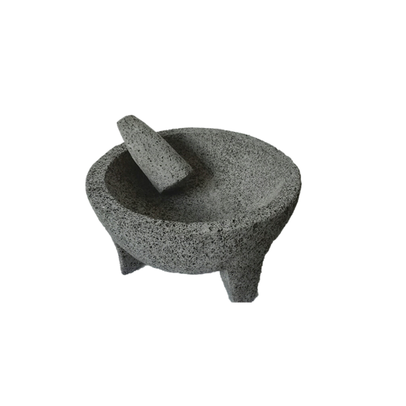

Evolución culinaria latinoamericana

Culturas originarias
Maíz, papa, cacao
Periodo colonial
Mestizaje, nuevas técnicas

Migraciones
Sabores compartidos

Cocina popular moderna
Revalorización contemporánea
Ecos de esta historia
Memoria colectiva
Sabores transmitidos más por costumbre que por recetas escritas.
Sabores que viajan
Técnicas e ingredientes que cruzan fronteras sin mapas oficiales.

Identidad en transformación
Cómo una tradición se adapta sin perder su esencia.